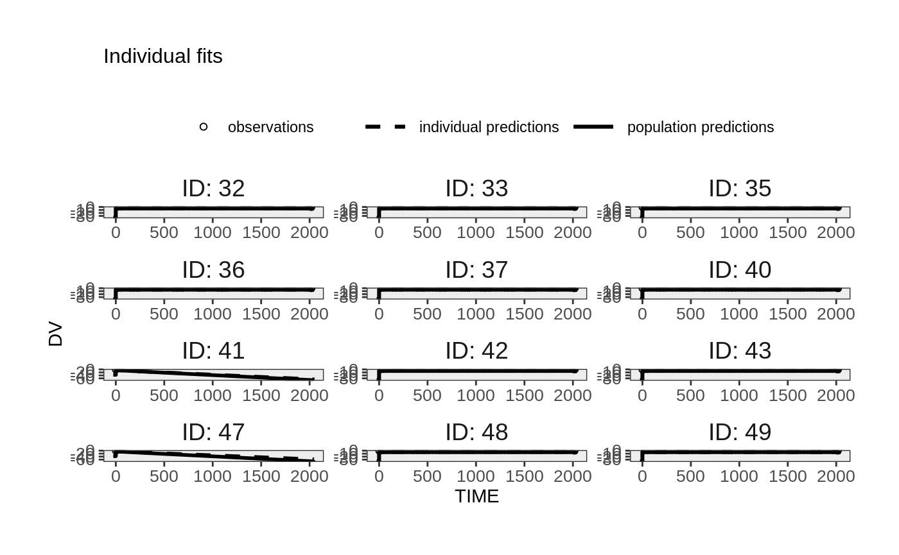
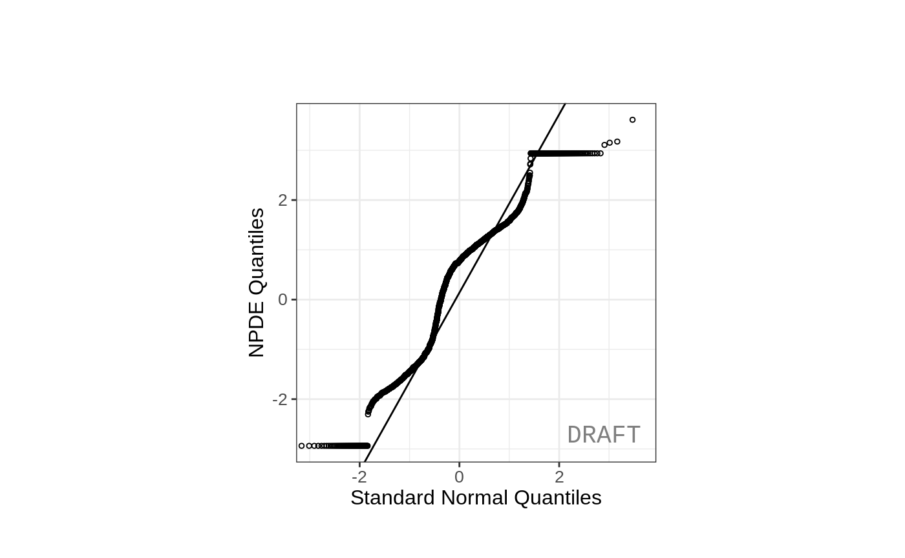
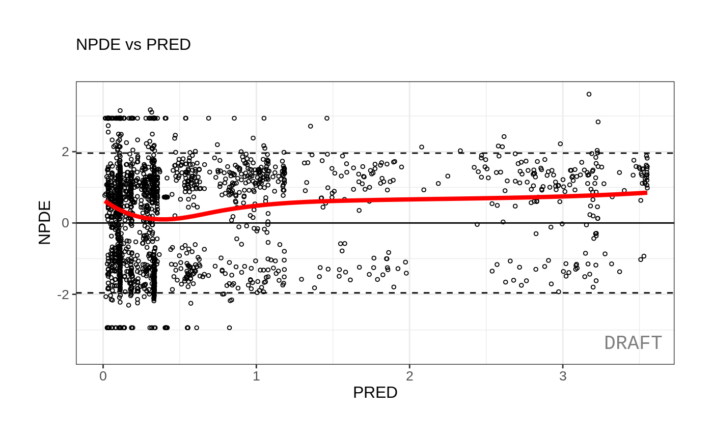
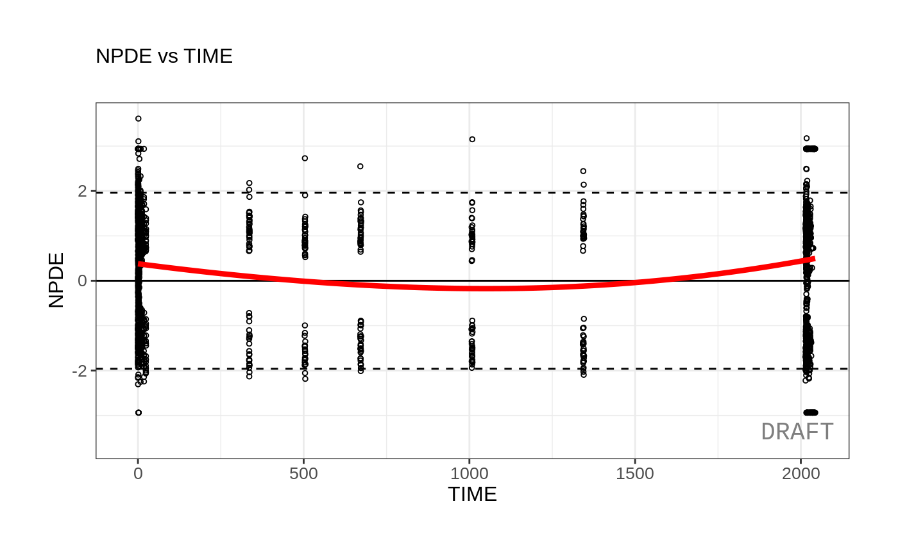
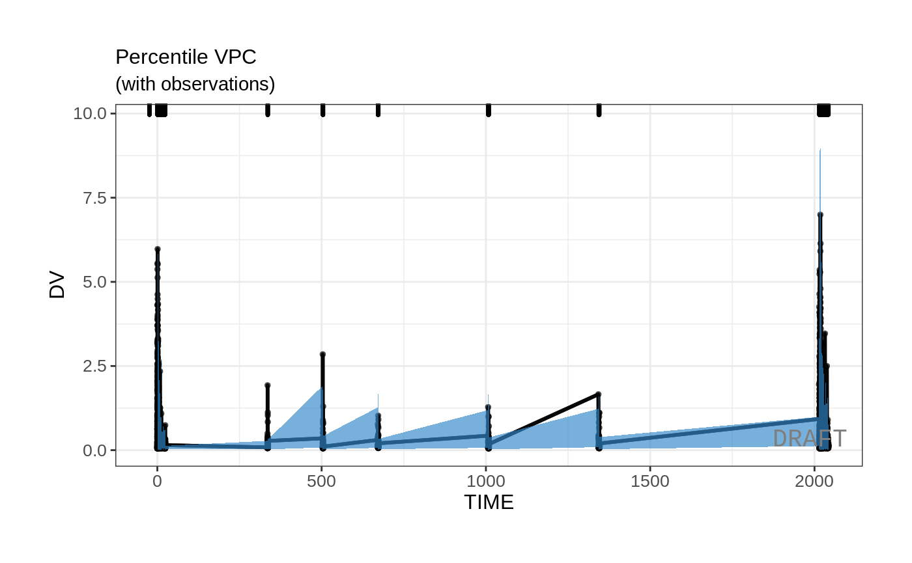
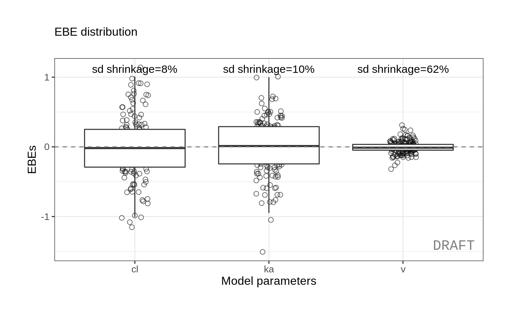

This shows an example of integrated workflow between xgxr nlmixr and ggPmx
library(nlmixr)
library(xgxr)
library(readr)
library(ggplot2)
library(dplyr)
#>
#> Attaching package: 'dplyr'
#> The following objects are masked from 'package:stats':
#>
#> filter, lag
#> The following objects are masked from 'package:base':
#>
#> intersect, setdiff, setequal, union
library(tidyr)
library(ggPMX)
#> Registered S3 method overwritten by 'GGally':
#> method from
#> +.gg ggplot2Load the data
pkpd_data <- case1_pkpd %>%
arrange(DOSE) %>%
select(-IPRED) %>%
mutate(TRTACT_low2high = factor(TRTACT, levels = unique(TRTACT)),
TRTACT_high2low = factor(TRTACT, levels = rev(unique(TRTACT))),
DAY_label = paste("Day", PROFDAY),
DAY_label = ifelse(DAY_label == "Day 0","Baseline",DAY_label))
pk_data <- pkpd_data %>%
filter(CMT == 2)
pk_data_cycle1 <- pk_data %>%
filter(CYCLE == 1)Exploratory analysis using ggplot and xgx helper functions
Use xgxr for simplified concentration over time, colored by Dose, mean +/- 95% CI
Often in exploring data it is worthwhile to plot by dose by each nominal time and add the 95% confidence interval. This typical plot can be cumbersome and lack some nice features that xgxr can help with. Note the following helper functions:
xgx_theme_set()this sets the theme to black and white color theme and other best pratices inxgxr.xgx_geom_ci()which creates the Confidence Interval and mean plots in a simple interface.xgx_scale_y_log10()which creates a log-scale that includes the minor grids that immediately show the viewer that the plot is a semi-log plot without carefully examining the y axis.xgx_scale_x_time_unitswhich creates an appropriate scale based on your times observed and the units you use. It also allows you to convert units easily for the right display.xgx_annote_status()which adds aDRAFTannotation which is often considered best practice when the data or plots are draft.
xgx_theme_set() # This uses black and white theme based on xgxr best
# pratices
# flag for labeling figures as draft
status <- "DRAFT"
time_units_dataset <- "hours"
time_units_plot <- "days"
trtact_label <- "Dose"
dose_label <- "Dose (mg)"
conc_label <- "Concentration (ng/ml)"
auc_label <- "AUCtau (h.(ng/ml))"
concnorm_label <- "Normalized Concentration (ng/ml)/mg"
sex_label <- "Sex"
w100_label <- "WEIGHTB>100"
pd_label <- "FEV1 (mL)"
cens_label <- "Censored"
ggplot(data = pk_data_cycle1, aes(x = NOMTIME,
y = LIDV,
group = DOSE,
color = TRTACT_high2low)) +
xgx_geom_ci(conf_level = 0.95) + # Easy CI with xgxr
xgx_scale_y_log10() + # semi-log plots with semi-log grid minor lines
xgx_scale_x_time_units(units_dataset = time_units_dataset,
units_plot = time_units_plot) +
# The last line creates an appropriate x scale based on time-units
# and time unit scale
labs(y = conc_label, color = trtact_label) +
xgx_annotate_status(status) # Adds draft status to plot
With this plot you see the mean concentrations confidence intervals stratified by dose
Concentration over time, faceted by Dose, mean +/- 95% CI, overlaid on gray spaghetti plots
Not only is it useful to look at the mean concentrations, it is often useful to look at the mean concentrations and their relationship between actual individual profiles. Using ggplot coupled with the xgxr helper functions used above, we can easily create these plots as well:
ggplot(data = pk_data_cycle1, aes(x = NOMTIME, y = LIDV)) +
geom_line(aes(group = ID), color = rgb(0.5, 0.5, 0.5), size = 1, alpha = 0.3) +
scale_shape_manual(values = c(1, 8)) +
scale_color_manual(values = c("grey50", "red")) +
xgx_geom_ci(aes(x = NOMTIME, color = NULL, group = NULL), conf_level = 0.95) +
xgx_scale_y_log10() +
xgx_scale_x_time_units(units_dataset = time_units_dataset, units_plot = time_units_plot) +
labs(y = conc_label, color = trtact_label) +
theme(legend.position = "none") +
facet_grid(.~TRTACT_low2high) +
xgx_annotate_status(status)
To me it appears the variability seems to be higher with higher doses and higher with later times.
Exploring the dose linearity
A common way to explore the dose linearity is to normalize by the dose. If the confidence intervals overlap, often this is a dose linear example.
ggplot(data = pk_data_cycle1,
aes(x = NOMTIME,
y = LIDV / as.numeric(as.character(DOSE)),
group = DOSE,
color = TRTACT_high2low)) +
xgx_geom_ci(conf_level = 0.95, alpha = 0.5, position = position_dodge(1)) +
xgx_scale_y_log10() +
xgx_scale_x_time_units(units_dataset = time_units_dataset, units_plot = time_units_plot) +
labs(y = concnorm_label, color = trtact_label) +
xgx_annotate_status(status)
#> Warning: position_dodge requires non-overlapping x intervals
#> Warning: position_dodge requires non-overlapping x intervals
This example seems to be dose-linear, with the exception of the censored data. This can be made even more clear by removing the censored data for this plot:
ggplot(data = pk_data_cycle1 %>% filter(CENS == 0),
aes(x = NOMTIME,
y = LIDV / as.numeric(as.character(DOSE)),
group = DOSE,
color = TRTACT_high2low)) +
xgx_geom_ci(conf_level = 0.95, alpha = 0.5, position = position_dodge(1)) +
xgx_scale_y_log10() +
xgx_scale_x_time_units(units_dataset = time_units_dataset, units_plot = time_units_plot) +
labs(y = concnorm_label, color = trtact_label) +
xgx_annotate_status(status)
#> Warning: position_dodge requires non-overlapping x intervals
#> Warning: position_dodge requires non-overlapping x intervals
#> Warning: Removed 1 rows containing missing values (geom_errorbar).
The lowest dose, with the most censoring, is the one that seems to be the outlier. That is likely an artifact of censoring.
Other ways to explore the data include by looking at normalized Cmax and AUC values (which we will skip in this vignette).
Exploring Covariates in the dataset
Using the xgx helper functions to ggplot you can explore the effect of high baseline weight. This particular plot is shown below:
ggplot(data = pk_data_cycle1, aes(x = NOMTIME,
y = LIDV,
group = WEIGHTB > 100,
color = WEIGHTB > 100)) +
xgx_geom_ci(conf_level = 0.95) +
xgx_scale_y_log10() +
xgx_scale_x_time_units(units_dataset = time_units_dataset, units_plot = time_units_plot) +
facet_grid(.~DOSE) +
labs(y = conc_label, color = w100_label) +
xgx_annotate_status(status) It seems that the weight effect is not extreme for either dose group
It seems that the weight effect is not extreme for either dose group
Fitting the data with nlmixr
First we need to subset to the PK only data and rename LIDV to DV
dat <- case1_pkpd %>%
rename(DV=LIDV) %>%
filter(CMT %in% 1:2) %>%
# Filter (for now) since CENS supprot in nlmixr is in development
filter(CENS == 0) %>%
filter(TRTACT != "Placebo")
Next create a 2 compartment model
## Use 2 compartment model
cmt2 <- function(){
ini({
lka <- log(0.1) # log Ka
lv <- log(10) # Log Vc
lcl <- log(4) # Log Cl
lq <- log(10) # log Q
lvp <- log(20) # Log Vp
eta.ka ~ 0.01
eta.v ~ 0.1
eta.cl ~ 0.1
logn.sd = 10
})
model({
ka <- exp(lka + eta.ka)
cl <- exp(lcl + eta.cl)
v <- exp(lv + eta.v)
q <- exp(lq)
vp <- exp(lvp)
linCmt() ~ lnorm(logn.sd)
})
}
## Check parsing
cmt2m <- nlmixr(cmt2)
print(cmt2m)
#> ▂▂ RxODE-based 1-compartment model with first-order absorption ▂▂▂▂▂▂▂▂▂▂▂▂
#> ── Initialization: ────────────────────────────────────────────────────────
#> Fixed Effects ($theta):
#> lka lv lcl lq lvp
#> -2.302585 2.302585 1.386294 2.302585 2.995732
#>
#> Omega ($omega):
#> eta.ka eta.v eta.cl
#> eta.ka 0.01 0.0 0.0
#> eta.v 0.00 0.1 0.0
#> eta.cl 0.00 0.0 0.1
#> ── μ-referencing ($muRefTable): ───────────────────────────────────────────
#> ┌─────────┬─────────┐
#> │ theta │ eta │
#> ├─────────┼─────────┤
#> │ lka │ eta.ka │
#> ├─────────┼─────────┤
#> │ lcl │ eta.cl │
#> ├─────────┼─────────┤
#> │ lv │ eta.v │
#> └─────────┴─────────┘
#> ── Model: ─────────────────────────────────────────────────────────────────
#> ka <- exp(lka + eta.ka)
#> cl <- exp(lcl + eta.cl)
#> v <- exp(lv + eta.v)
#> q <- exp(lq)
#> vp <- exp(lvp)
#> linCmt() ~ lnorm(logn.sd)
#> ▂▂▂▂▂▂▂▂▂▂▂▂▂▂▂▂▂▂▂▂▂▂▂▂▂▂▂▂▂▂▂▂▂▂▂▂▂▂▂▂▂▂▂▂▂▂▂▂▂▂▂▂▂▂▂▂▂▂▂▂▂▂▂▂▂▂▂▂▂▂▂▂▂▂▂## First try log-normal (since the variabilitiy seemed proportional to concentration)
cmt2fit.logn <- nlmixr(cmt2m, dat, "saem", table=tableControl(npde=TRUE,cwres=TRUE))
#> Loading model already run (/tmp/RtmpXKdUFj/temp_libpath58be457a881a/nlmixr.examples/nlmixr-cmt2-saem-cdb7afd1aa13fbb2c552541a9da2b1ab.rds)
#> Warning in lapply(X = X, FUN = FUN, ...): ID missing in parameters dataset;
#> Parameters are assumed to have the same order as the IDs in the event dataset
#> Warning in lapply(X = X, FUN = FUN, ...): IDs without observations dropped:
#> 60 58 56 53 52 46 45 44 39 38 34 31
#> Warning in lapply(X = X, FUN = FUN, ...):
#> With negative times, compartments initialize at first negative observed time.
#> With positive times, compartments initialize at time zero
#> Use `rxSetIni0(FALSE)` to initialize at first observed time
#> This warning is displayed once per session.
## Now try proportional
cmt2fit.prop <- cmt2fit.logn %>%
update(linCmt() ~ prop(prop.sd)) %>%
nlmixr(est="saem", table=tableControl(npde=TRUE, cwres=TRUE))
#> Loading model already run (/tmp/RtmpXKdUFj/temp_libpath58be457a881a/nlmixr.examples/nlmixr-saem-427a24cbdf48c465808a8a03e7d93501.rds)
#> Warning in lapply(X = X, FUN = FUN, ...): ID missing in parameters dataset;
#> Parameters are assumed to have the same order as the IDs in the event dataset
#> Warning in lapply(X = X, FUN = FUN, ...): IDs without observations dropped:
#> 60 58 56 53 52 46 45 44 39 38 34 31
#> Warning in lapply(X = X, FUN = FUN, ...): Some variances were zero,
#> replaced with 1.
## now try add+prop
cmt2fit.add.prop <- cmt2fit.prop %>%
update(linCmt() ~ prop(prop.sd) + add(add.sd)) %>%
nlmixr(est="saem", table=tableControl(npde=TRUE, cwres=TRUE))
#> Loading model already run (/tmp/RtmpXKdUFj/temp_libpath58be457a881a/nlmixr.examples/nlmixr-saem-06af13bd65e4bca17aac226d8454f7c2.rds)
#> Warning in lapply(X = X, FUN = FUN, ...): ID missing in parameters dataset;
#> Parameters are assumed to have the same order as the IDs in the event dataset
#> Warning in lapply(X = X, FUN = FUN, ...): IDs without observations dropped:
#> 60 58 56 53 52 46 45 44 39 38 34 31Now that we have run 3 different estimation methods, we can compare the results side-by-side
library(huxtable)
#>
#> Attaching package: 'huxtable'
#> The following object is masked from 'package:dplyr':
#>
#> add_rownames
#> The following object is masked from 'package:ggplot2':
#>
#> theme_grey
as_hux("lognormal"=cmt2fit.logn, "proportional"=cmt2fit.prop, "add+prop"=cmt2fit.add.prop)
#> Registered S3 methods overwritten by 'broom.mixed':
#> method from
#> augment.lme broom
#> augment.merMod broom
#> glance.lme broom
#> glance.merMod broom
#> glance.stanreg broom
#> tidy.brmsfit broom
#> tidy.gamlss broom
#> tidy.lme broom
#> tidy.merMod broom
#> tidy.rjags broom
#> tidy.stanfit broom
#> tidy.stanreg broom| lognormal | proportional | add+prop | |
| lka | -0.998 | -0.992 | -0.983 |
| (0.054) | (0.052) | (0.052) | |
| lv | 2.469 *** | 2.448 *** | 2.461 *** |
| (0.056) | (0.049) | (0.049) | |
| lcl | 2.553 *** | 2.509 *** | 2.511 *** |
| (0.047) | (0.047) | (0.047) | |
| lq | 2.376 *** | 2.293 *** | 2.299 *** |
| (0.040) | (0.035) | (0.036) | |
| lvp | 5.176 *** | 5.110 *** | 5.100 *** |
| (0.038) | (0.034) | (0.034) | |
| sd__eta.ka | 0.447 | 0.452 | 0.450 |
| sd__eta.v | 0.203 | 0.169 | 0.151 |
| sd__eta.cl | 0.500 | 0.500 | 0.500 |
| logn.sd | 0.320 | ||
| prop.sd | 0.283 | 0.283 | |
| add.sd | 0.000 | ||
| N | 2207 | 2207 | 2207 |
| Objective Function | -6533.378 | -6730.322 | -6730.371 |
| logLik | 1492.219 | 1590.691 | 1590.715 |
| AIC | -2966.438 | -3163.382 | -3161.430 |
| *** p < 0.001; ** p < 0.01; * p < 0.05. | |||
Note that the additive and proportional model has the additive component approach zero. When comparing the objective functions of log-normal and proportional models, the proportional model has the lowest objective function value. (Since we modeled log-normal without data transformation it is appropriate to compare the AIC/Objective function values)
You may wish to see a visual comparison of the parameters:
library(dotwhisker)
## exponentiate=NA causes the parameters to be back-transformed
dwplot(list("lognormal"=cmt2fit.logn, "proportional"=cmt2fit.prop), exponentiate=NA) +
## Notice we can use some xgx functions post analysis as well,
## since they are ggplot helper functions
xgx_scale_x_log10() +
ggtitle("Comparison between lognormal and proportional models",
"On backtransformed scales")
Model Diagnostics with ggPMX
## The controller then can be piped into a specific plot
ctr <- pmx_nlmixr(cmt2fit.logn, conts = c("WEIGHTB"), cats="TRTACT")
#> Loading augPred already run (/tmp/RtmpXKdUFj/temp_libpath58be457a881a/nlmixr.examples/nlmixr-augPred-cmt2--14e05e7a746331fe30ae894da7c769c9.rds)
#> Loading vpc already run (/tmp/RtmpXKdUFj/temp_libpath58be457a881a/nlmixr.examples/nlmixr-vpc-cmt2--a6ae143a0b2e5f044534224e0e7ae970.rds)
ctr %>% pmx_plot_dv_ipred
#> Warning: Removed 276 rows containing missing values (geom_point).
ctr %>% pmx_plot_dv_pred
#> Warning: Removed 276 rows containing missing values (geom_point).
ctr %>% pmx_plot_abs_iwres_ipred
#> Warning: Removed 276 rows containing missing values (geom_point).
ctr %>% pmx_plot_individual(1)
#> Warning: Removed 276 rows containing missing values (geom_point).
ctr %>% pmx_plot_iwres_dens
#> Warning: Removed 276 rows containing non-finite values (stat_density).
ctr %>% pmx_plot_npde_qq
#> Warning: Removed 276 rows containing non-finite values (stat_qq).
ctr %>% pmx_plot_npde_pred
#> Warning: Removed 276 rows containing missing values (geom_point).
ctr %>% pmx_plot_npde_time
#> Warning: Removed 276 rows containing missing values (geom_point).
ctr %>% pmx_plot_eta_qq
ctr %>% pmx_plot_vpc
#> Warning: Removed 276 rows containing missing values (geom_point).
#> Warning: Removed 275 rows containing missing values (geom_path).
#> Warning: Removed 550 rows containing missing values (geom_path).
ctr %>% pmx_plot_eta_box
ctr %>% pmx_plot_eta_hist
ctr %>% pmx_plot_eta_matrix
#> Warning: Removed 2 rows containing non-finite values (stat_smooth).
#> Warning: Removed 2 rows containing missing values (geom_point).
#> Warning: Removed 2 rows containing non-finite values (stat_smooth).
#> Warning: Removed 2 rows containing missing values (geom_point).
#> Warning: Removed 1 rows containing non-finite values (stat_smooth).
#> Warning: Removed 1 rows containing missing values (geom_point).
## Create a report of all the plots you generated from the controller
ctr %>% pmx_report("nlmixr_report",".")
unlink("nlmixr_report.Rmd") # Remove this file so it isn't confused with vignettes